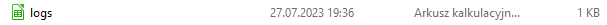
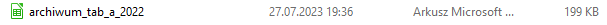
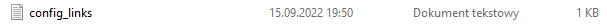
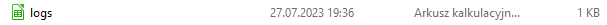
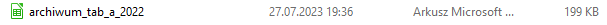
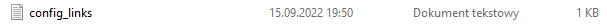

Opis techniczny

X
Kod działa wg konkretnej, założonej konfiguracji. W katalogu musi znajdować się plik konfiguracyjny, który jest źródłem informacji o stronie , z której pobierać dane i nazwie pliku, który będzie tworzony. Po uruchomieniu skryktu we wskazanym katalogu pojawią się pliki z informacjami ściąganymi ze strony oraz logami. Struktura katalogu podczas pracy skryptu:
 




